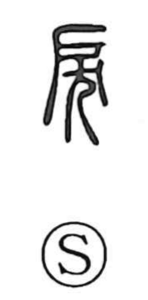

戻

Uncategorized
Kun: modoru, modosu | On: rei
to return ・ to go back ・ to put back ・ to send back
Explanation
Originally written 戾, the graph joins 戸 (door, threshold) with 犬 (dog). In ancient practice the doorway was a vital liminal place, and a dog was buried there as a sacrificial act of exorcism to keep harmful spirits from entering. From this threshold-ritual image the character developed senses such as to run counter or oppose and also to reach or come to, and in certain contexts it could denote an offense or sin (as in 罪戻). In Japanese it came to be used for the everyday idea of returning or restoring, as in 返戻, 元に戻す, and 後戻り.